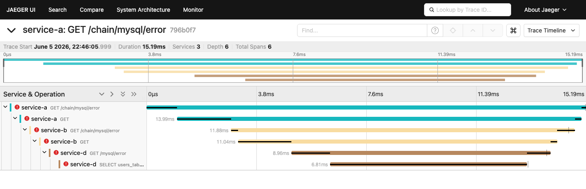

内部分享 · 可观测性扫盲
说清楚 OpenTelemetry
到底是个啥
从一次请求 → Trace → SDK → Collector → 后端_
历史教学示例：旧服务名、接口与截图仅供理解概念；当前运行方式见 README。
grep 各自的日志,靠时间戳手工拼时序 —— 服务一多就抓瞎。| 维度 | 监控 Monitoring | 可观测性 Observability |
|---|---|---|
| 回答的问题 | 出事了吗? | 为什么出事? |
| 典型形态 | CPU/QPS 仪表盘报警 | 顺着一次请求往下钻 |
| 面对未知 | 只能看预设好的指标 | 能问没预设过的问题 |
跨服务串成一棵树,定位"哪一跳慢/错"。
QPS、延迟分位、错误率 —— 看趋势和报警。
某时刻某行代码说了什么。最细,但最难拼时序。

traceId。上图整棵树就是一个 trace。parentId,父子关系拼出树;缩进越深 = 调用越往下游。traceId 同一请求都一样;id/parentId 拼父子。timestamp+duration = 在哪开始、跑了多久。attributes = 标签键值对(方法/路由/状态码/SQL...),查询和过滤全靠它。status = ERROR 让这条 span(及整条 trace)被重点保留 —— 后面采样会用到。events 里挂着 exception 堆栈等"时刻点"。traceparent —— 所有现代 SDK 默认认它。TraceId,拿着它能直接跳进 Jaeger。SDK 自动产 span;按 OTLP 协议把数据发走。换后端不用改业务代码。
收下数据,存起来,画成你能查的界面。这些不是 OTel,是 OTel 的"消费者"。
gRPC 或 HTTP;为省网络开销,会 Batch 攒一批 span 一起发。数据怎么进来(如 otlp)。至少配一个。
中间怎么加工:batch 批处理、tail_sampling 采样、改/删标签。可选但常用。
数据发去哪(如 otlp/jaeger)。至少配一个。
连接两条管道 / 健康检查等辅助。入门可先不管。
| 部署形态 | 跑在哪 | 适合 |
|---|---|---|
| Agent 代理 | 和应用同主机 (sidecar / daemonset) | 新应用 / K8s |
| Gateway 网关 | 独立服务, 每集群/区域一组 | 已有应用 集中治理 |
service.pipelines 里引用,它才真正生效。
tail_sampling 必须排在 batch 前面,否则采样决策可能不对。
HTTP 框架、数据库、Redis 这些调用,SDK 自动包好,不用你在业务里手写 span。本 demo 的 4 个 Go 服务就是这么接的。